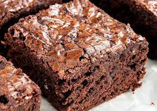

ingredientes
lista de ingredientes
Se liga nesta lista de poucos e simples ingredientes para fazer um delicioso brownie...

4 ovos
2 xíc açúcar
1 1/4 xíc nescal
100g manteiga derretida
1 1/4 xíc farinha